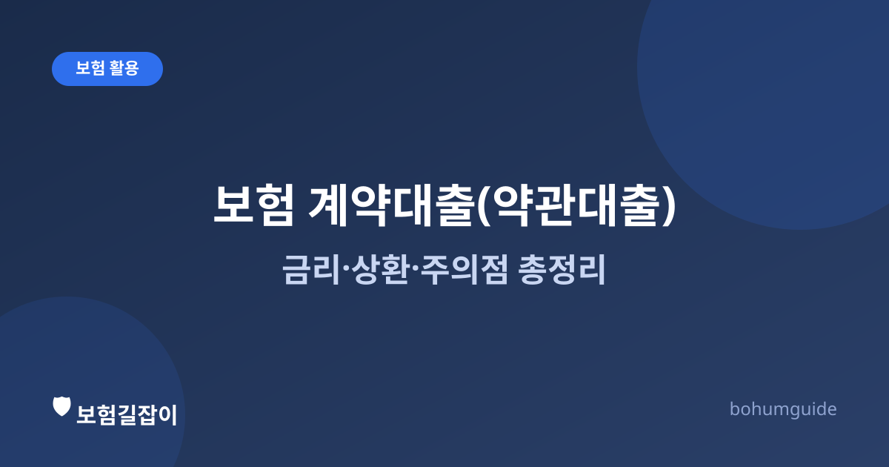

보험 계약대출(약관대출)이란? 금리·상환·주의점 총정리
급하게 목돈이 필요할 때 "내 보험 해지하고 돈 빼야 하나" 고민하기 전에, 해지하지 않고도 빌릴 수 있는 계약대출(약관대출)이라는 방법이 있습니다. 원리와 함께 실제로 조심해야 할 부분을 짚어 보겠습니다.

✍️ 편집자 참고: 본 글은 초안입니다. 계약대출 가능 금액과 금리, 이자 부과 방식은 보험사·상품·시점(공시이율 변동 등)에 따라 달라지므로, 게시 전 최신 기준으로 검수·수정해 주세요.
계약대출(흔히 약관대출이라고도 부릅니다)은 내가 가입한 보험의 해지환급금을 담보로 보험사에서 돈을 빌리는 제도입니다. 별도의 신용 심사 없이, 이미 쌓여 있는 내 해지환급금 범위 안에서 빌리는 구조이기 때문에 은행 신용대출과는 성격이 다릅니다. 급전이 필요할 때 보험을 해지하는 대신 고려해 볼 수 있는 선택지지만, 이자가 붙는 대출이라는 점은 동일하므로 장단점을 정확히 알아 두는 것이 중요합니다.
계약대출은 어떤 원리로 작동할까
계약대출의 핵심은 '내 보험 안에 쌓인 돈을 담보로, 그 돈의 일부를 미리 당겨 쓴다'는 개념입니다. 저축성·보장성 보험 모두 일정 기간 유지되면 해지환급금이 쌓이는데, 보험사는 이 해지환급금의 일정 비율(상품·시점에 따라 다르며 통상 50~95% 수준으로 안내되는 경우가 많음)까지 대출해 줍니다. 정확한 한도는 상품 약관과 보험사 안내에 따라 다르므로, 보험사 앱이나 콜센터에서 개별 조회가 필요합니다.
중요한 점은 계약대출을 받아도 보장 내용 자체는 그대로 유지된다는 것입니다. 즉 대출을 받았다고 사망보험금이나 진단비 담보가 사라지는 것은 아닙니다. 다만 향후 보험금이나 해지환급금을 지급할 때, 대출 원금과 이자를 뺀 나머지 금액이 지급됩니다.
대출 금리는 어떻게 정해질까
계약대출 금리는 상품마다 다르지만, 대체로 그 상품의 예정이율(또는 공시이율)에 일정 가산금리를 더하는 방식으로 책정되는 경우가 많습니다. 저축성 보험이나 예정이율이 높았던 옛날 상품일수록 계약대출 금리가 신용대출보다 낮게 느껴질 수 있고, 반대의 경우도 있을 수 있습니다. '보험 계약대출은 무조건 싸다'고 단정하지 말고, 신청 전 정확한 금리를 확인하고 다른 대출 상품과 비교해 보는 것이 안전합니다.
| 구분 | 심사 | 금리 특징 | 주요 리스크 |
|---|---|---|---|
| 계약대출(약관대출) | 신용심사 없음(해지환급금 범위 내) | 상품별 예정이율 연동, 상품마다 상이 | 미상환 시 보장·해지환급금 축소 |
| 은행 신용대출 | 소득·신용점수 심사 | 개인 신용도에 따라 상이 | 연체 시 신용점수 하락 |
| 보험 해지(환급금 수령) | 심사 없음 | 이자 없음(대출 아님) | 보장 완전 소멸, 원금 손실 가능 |
위 표는 이해를 돕기 위한 일반적 비교이며, 실제 조건은 개인의 신용상태와 가입한 상품에 따라 크게 달라질 수 있습니다.
신청 방법과 상환 방식
대부분의 보험사는 보험사 홈페이지, 모바일 앱, 콜센터를 통해 계약대출을 신청할 수 있게 해 두었습니다. 별도 서류 없이 본인 인증만으로 몇 분 안에 신청·입금까지 처리되는 경우가 많아, 신용대출보다 절차가 간단하다고 느껴질 수 있습니다.
상환은 정해진 만기가 없는 경우가 많고, 원할 때 수시로 원금 일부 또는 전액을 상환할 수 있는 상품이 일반적입니다. 다만 상환하지 않고 방치하면 이자가 계속 쌓이고, 밀린 이자가 원금에 더해지는(복리로 불어나는) 방식을 쓰는 상품도 있으므로 방치는 피하는 것이 좋습니다.
상환하지 않으면 어떻게 될까
계약대출을 갚지 않아도 당장 독촉이 오지는 않지만, 이자가 계속 쌓여 대출 원리금이 해지환급금에 근접하거나 초과하는 시점이 오면 문제가 됩니다. 이 경우 보험사가 계약 해지를 안내하거나, 만기·사망 시 지급될 보험금·환급금에서 대출 원리금을 차감하고 남은 금액만 지급합니다. 상황에 따라서는 받을 보험금이 예상보다 크게 줄어들 수 있으므로, 최소한 이자만이라도 정기적으로 상환하는 습관이 필요합니다. 해지환급금 자체의 개념이 궁금하다면 해지환급금이 적은 이유도 함께 참고해 보세요.
이럴 때 고려해 볼 만하다
- 일시적으로 급전이 필요하지만, 곧 상환할 여력이 있는 경우.
- 신용점수에 영향을 주지 않고 빠르게 자금을 마련하고 싶은 경우.
- 오래 유지해 온 보장을 해지 없이 지키면서 자금을 융통하고 싶은 경우.
- 여러 금융권 대출 금리를 비교했을 때 계약대출 금리가 더 유리한 경우.
반대로 상환 계획 없이 습관적으로 대출을 이용하거나, 이미 다른 대출 상환에 어려움을 겪고 있는 상황이라면 계약대출도 결국 빚이 늘어나는 결과로 이어질 수 있습니다. 이럴 때는 보험금 청구 거절 대응법이나 금융복지 상담 등 다른 대안도 함께 고려해 보는 것이 좋습니다.
요약
계약대출(약관대출)은 해지환급금을 담보로 신용 심사 없이 빌리는 대출로, 보장은 그대로 유지하면서 급전을 마련할 수 있는 방법입니다. 다만 이자가 계속 쌓이고, 상환하지 않으면 향후 받을 보험금·환급금이 줄어들거나 계약이 정리될 수 있으므로 금리와 상환 계획을 반드시 함께 따져 봐야 합니다.
참고할 수 있는 공신력 있는 자료
- 금융감독원 — 금융·보험 소비자 보호 및 안내
- 금융소비자 정보포털 파인 — 보험 상품별 계약대출 조건 조회
- 생명보험협회 — 생명보험 상품·제도 안내
본 정보는 일반적인 안내이며, 계약대출 가능 금액과 금리·상환 조건은 가입하신 상품의 약관과 보험사 상담을 통해 반드시 확인하시기 바랍니다.